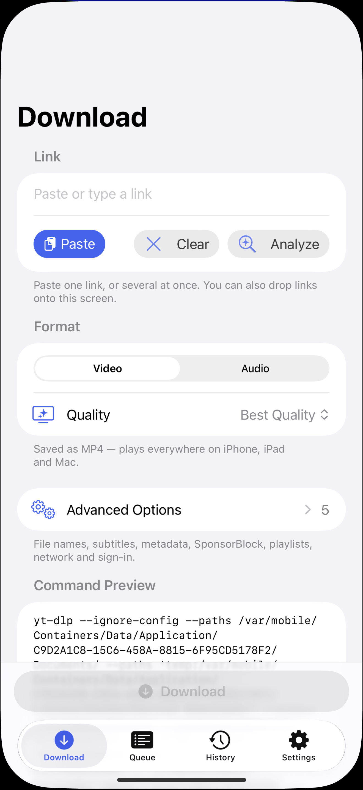
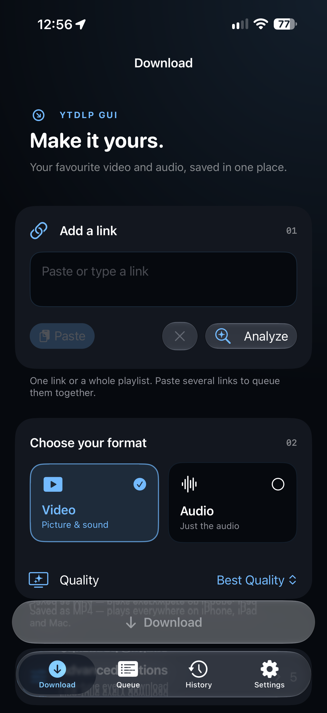
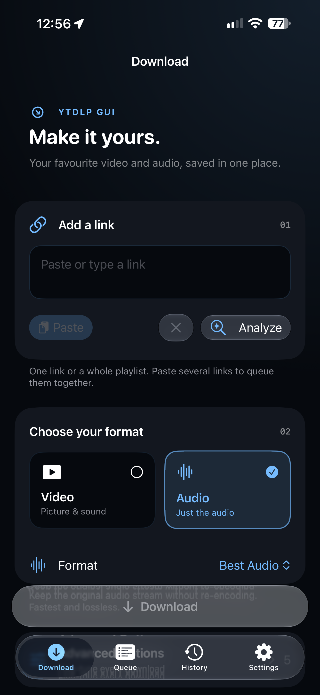
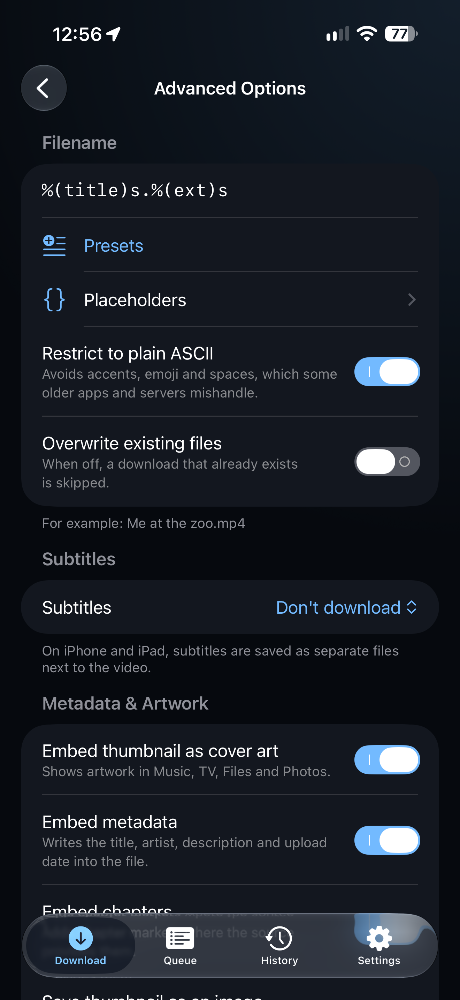
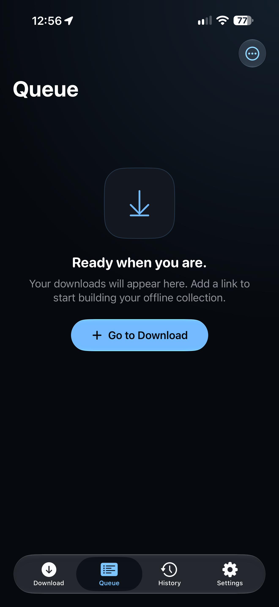
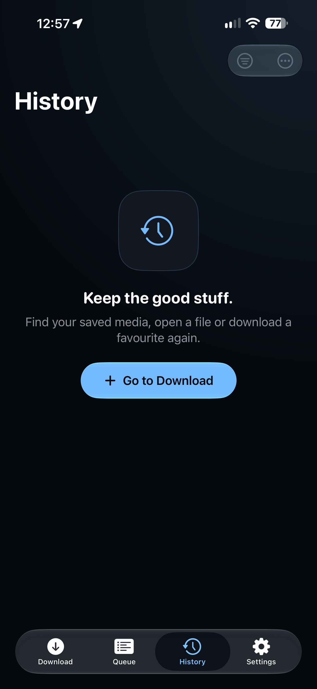
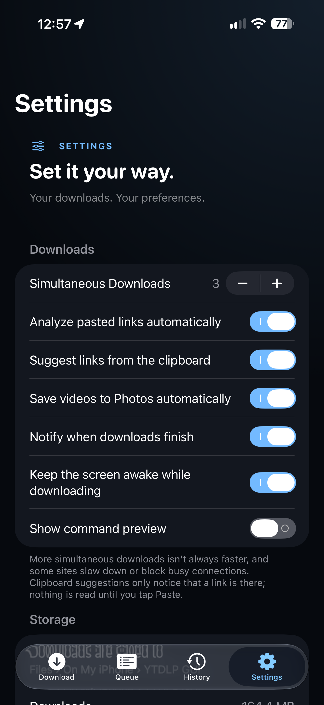
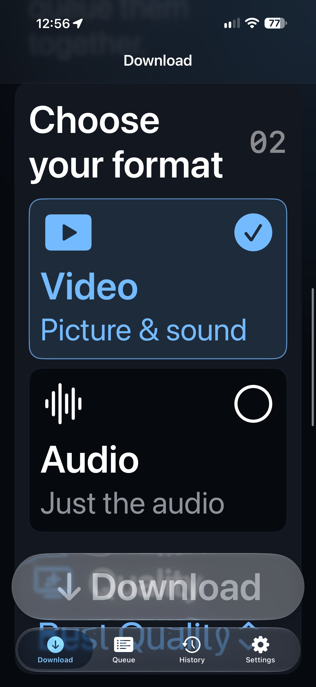
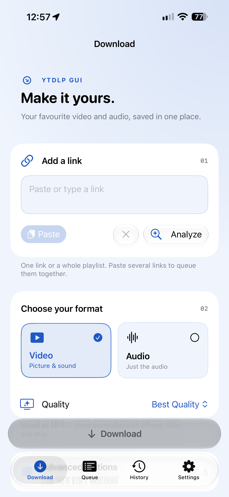

Native Liquid Glass controls, an ink and blue palette, and redesigned link and format cards. Captured on iPhone 16 Pro Max · iOS 27.2 · 29 September 2026.
28 focused tests passed. Includes navigation, format selection, large text, Light appearance and saved settings. These are actual app screenshots. Validation details · Test result summary








